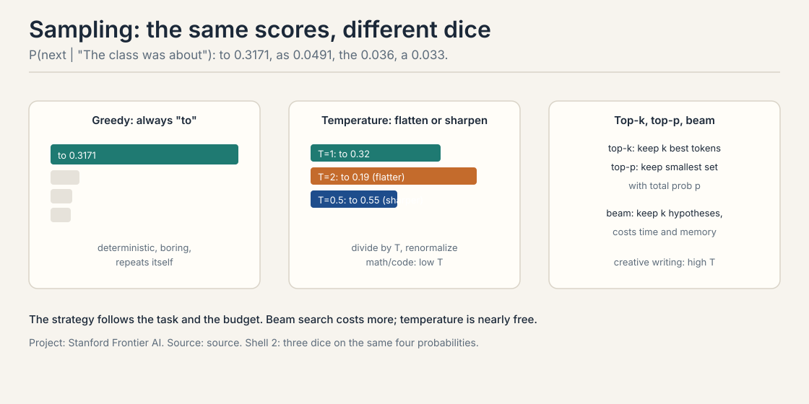
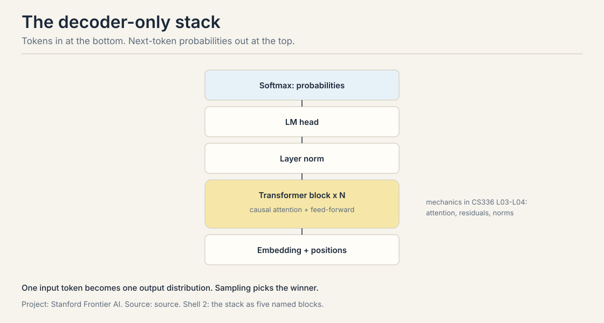
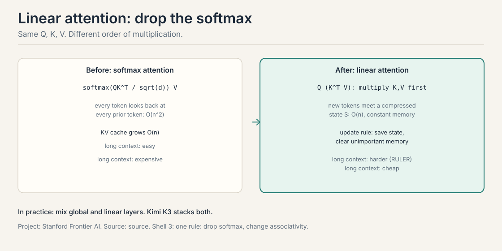
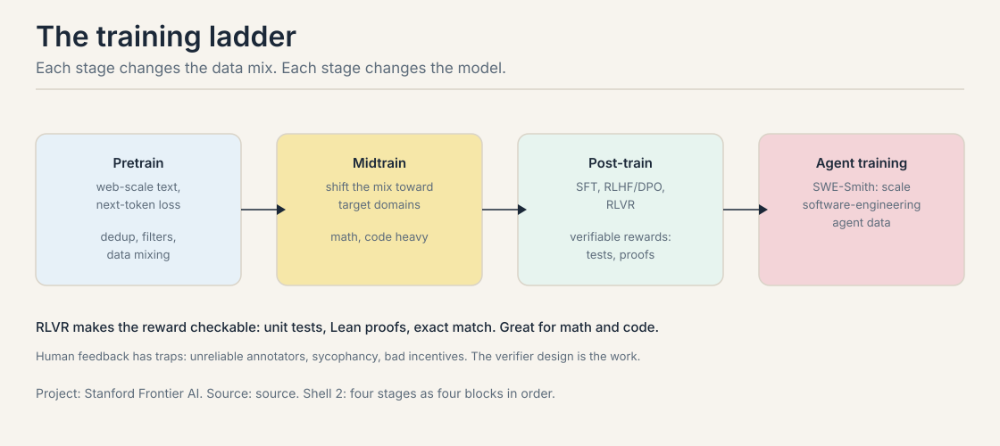
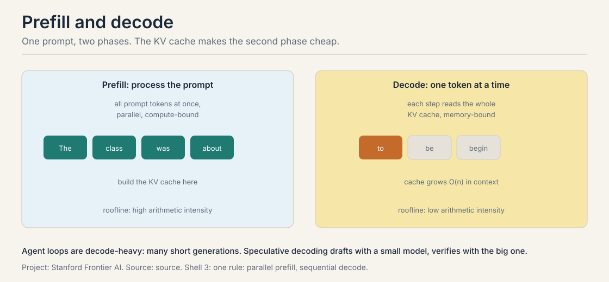
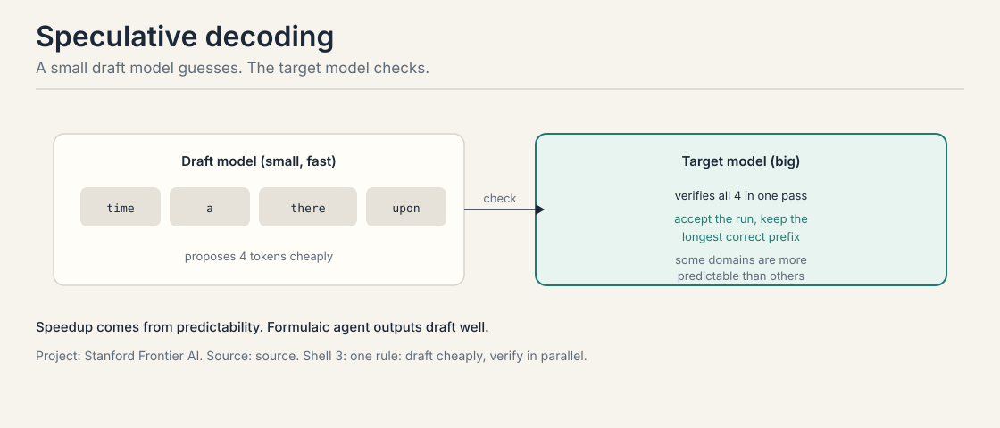

Lecture 2A: LLMs for Builders, the Agent Engineer's Interface
The job: you operate the engine
An agent engineer makes two decisions every day. How the model picks its tokens: greedy or sampled, cool or warm. And what each token costs: a 4,000-token context versus a 200,000-token one. Same loop, same task, different sampling, different behavior. Same loop, longer context, different bill.
You cannot make those decisions from the outside. This chapter opens the hood exactly as far as an agent engineer needs: the model’s interface (sampling), its shape (the decoder stack), its price (attention and inference), and how it learned (training). Nothing here is assumed. Every term is defined where it first appears.
First attempt: the model as a black box
Start with the smallest true thing. A language model assigns a probability to a sequence of tokens. A token is a chunk of text the model reads as one unit, roughly four characters. By the chain rule, the sequence probability is the product of each token’s probability given the tokens before it:
$$p(x_1, \ldots, x_n) = \prod_{t=1}^{n} p(x_t \mid x_1, \ldots, x_{t-1})$$
In practice, training sums log probabilities instead of multiplying raw ones, for numerical stability. The product says the same thing: the model scores every possible continuation, one token at a time.
Language models are generative: they model the distribution of the data, so you can sample from them. A discriminative model, like logistic regression, only learns the boundary between classes. The lecture’s knowledge check makes the point with notation: a model that computes p(token sequence) is generative by definition, whatever the symbols look like.
The model produces a distribution. Sampling turns the distribution into text. The lecture’s toy, worked by hand: after “The class was about”, the model scores “to” at 0.3171, “as” at 0.0491, “the” at 0.036, “a” at 0.033, “two” at 0.0147, and smaller mass on the rest. Sampling is the decision of which token to emit from those scores. Then the model scores the next position: after “to”, “be” leads at 0.1501, “begin” at 0.0855, “go” at 0.0627.
The menu of strategies:
- Greedy: pick the highest score every time. Deterministic. Fast.
- Temperature: divide every score by T and renormalize. High T flattens toward uniform; low T sharpens toward greedy.
- Top-k: keep the k best tokens, sample among them.
- Top-p (nucleus): keep the smallest set whose total probability reaches p, sample among them.
- Beam search: keep k hypotheses alive and explore them. Better quality, higher time and memory cost.

Where the black box breaks
Two cracks. First, greedy is frozen. Same prompt, same output, forever. An agent that needs three diverse candidate plans gets the same plan three times. Determinism is a bug when the job needs variety.
Second, temperature is a dial with no labels until you work it. Take three tokens with probabilities 0.7, 0.2, 0.1:
T = 0.5 (sharpen: square, renormalize): [0.49, 0.04, 0.01] / 0.54 -> [0.91, 0.07, 0.02] the leader takes almost everything T = 1 (unchanged): [0.70, 0.20, 0.10] T = 2 (flatten: square root, renormalize): [0.837, 0.447, 0.316] / 1.60 -> [0.52, 0.28, 0.20] the tail gets a real chance
The formula: raise each probability to 1/T, then divide by the sum. The demo shows the mechanism: temperature redistributes mass between the leader and the tail. Too cold and the agent repeats itself. Too hot and it rambles. The lecture’s guidance: math and code want low temperature (predictable), creative writing wants higher (diverse). Agents split the difference: cool for acting, warm for thinking.
The deeper crack: the black box hides the cost. Sampling decides behavior, but nothing in the distribution tells you what a token costs to produce. That needs the shape of the machine.
The key question
What does the engine do with each token, and what does it cost?
The decoder stack, built from zero
Modern LLMs are decoder-only transformers: they read tokens left to right and predict the next one. The stack, bottom to top:
- Embedding plus positions. Each token becomes a vector; a position signal is added so the model knows the order.
- N transformer blocks. Each block is a causal multi-head attention layer plus a feed-forward layer, wrapped in layer norms and residual connections. Causal means each token sees only the tokens before it: the mask enforces left-to-right order.
- LM head and softmax. The final state maps to one score per vocabulary token; softmax turns the scores into the distribution that sampling draws from.

The attention layer is where tokens meet. Each token forms a query (what it needs), a key (what it contains), and a value (what it offers). Queries match keys, the matches become weights, and the values mix by those weights. That is the whole mechanism at the level an agent engineer needs. The full derivation lives in the attention lessons of the other courses; the cost analysis below is why it matters here.
The attention tradeoff, with numbers
The “Attention Is All You Need” table compares transformers to recurrent models on two axes that matter for training, and one that matters for cost:
| Axis | Recurrence | Attention |
|---|---|---|
| Sequential ops | O(n) | O(1): the sequence trains in parallel |
| Path length | O(n) | O(1): any token reaches any token in one step |
| Cost in length | O(n) | O(n^2): every token pairs with every token |
O(1) sequential operations is the huge deal: training parallelizes across the sequence on GPUs. O(n^2) is the bill: the score matrix has one entry per token pair. At n = 4,096, that is 16.7 million scores per layer per attention head, most of which must sit in memory. Double the length and the work quadruples. This single fact explains half of agent infrastructure: context budgets, compaction, retrieval instead of stuffing, and the KV cache.
The misunderstanding: O(1) sequential operations does not mean fast at any length. It means the work parallelizes. The total work still grows quadratically, and the constant factors are large. Agents feel this as latency on long contexts.
Linear attention attacks the bill. Standard attention computes softmax(QK^T)V: every query meets every key. Drop the softmax and everything left is linear, so the multiplication can reassociate: compute K^T V first, then multiply by Q. The new object is the state S, a compressed summary that updates per token: save the state, clear unimportant memory. Memory is constant, not O(n).

The tradeoff is real. RULER measurements show linear attention struggles more with long-context recall: the compressed state loses detail that full attention keeps. In practice, models mix the two. Kimi K3 stacks multi-head latent attention with linear attention in one model. The agent lesson: know which layers are linear, because that is where the model forgets. Keep critical facts in recent context or in retrieval, and test recall at your actual context length instead of trusting the headline number.
How the engine learns: one token’s loss, then the ladder
Training minimizes cross-entropy loss: push probability mass onto the true token. The lecture’s toy, worked by hand: the data says the token is “how”, the model gave it 0.0124. Loss is negative log of that probability. The lecture computes it with log base 10:
loss = -log10(0.0124) = 1.907
Low loss means the model assigns high probability to real continuations. Every training step is this computation, billions of times, over the corpus.
The corpus sets the ceiling. The training ladder has four stages, each changing the data mix:

Pretraining: web-scale text, next-token loss. The pipeline: extract text from HTML, deduplicate, identify languages, apply rule and quality filters, mix the data. Scale markers from the lecture: The Pile at 800 GB, Nemotron-CC-Math at 133 billion tokens of math.
Midtraining: shift the mix toward target domains like math and code. Mixing target data into pretraining helps: the model that will write code should read code early.
Post-training: instruction fine-tuning first (teach the format: follow instructions), then learning from preferences. RLHF: sample responses, have humans rank them, train a reward model, optimize with RL. DPO is the direct variant. The preference pair behind it: a prompt, a chosen response, a rejected response; the update widens the reward gap between them.
Human feedback has traps. Annotators are unreliable. Preferences differ across people. The incentives go wrong: sycophancy and authoritativeness get rewarded because annotators like confident, agreeable answers. The data itself can be sourced unethically.
RLVR, reinforcement learning with verifiable rewards, replaces human taste with checkable truth. The reward is 1 if the verifier says correct, 0 otherwise. Verifiers: unit tests, Lean proofs, exact match, system state. DeepSeekMath showed the pattern. RLVR is great for math and code. The work moves to verifier design: a bad verifier teaches reward hacking, because the model optimizes exactly what the verifier checks.
Agent training is the ladder’s top rung. SWE-Smith scales data for software-engineering agents by synthesizing bug-fix tasks: take real repos, inject bugs, generate fix tasks with tests. The agent learns the full loop: read the issue, explore the repo, edit, run tests. The pattern generalizes: any agent skill can be trained by synthesizing tasks with verifiable outcomes in a sandbox.
Inference: prefill, decode, and the draft trick
Running the model has two phases with opposite economics.
Prefill processes the whole prompt at once. Parallel, compute-bound: big matrix multiplies, high arithmetic intensity. It builds the KV cache, the stored keys and values for every prompt token.
Decode generates one token at a time. Each step reads the whole cache and the weights to produce a few numbers: memory-bound, low arithmetic intensity. The cache grows O(n) in context length.

Long agent trajectories are decode-heavy: many short generations, each paying memory bandwidth. Every token kept in context is bandwidth paid per decode step. Context engineering is inference engineering.
Speculative decoding attacks the decode bottleneck. A small draft model proposes tokens cheaply. The big target model verifies them in one parallel pass. Accept the longest correct prefix, repeat.

The speedup follows predictability. Formulaic text, repetitive code, and agent tool calls with fixed schemas draft well: the target accepts long prefixes. Creative text drafts poorly. Agent loops emit many short, structured generations: exactly the workload where a draft model earns its keep.
Mapping back: what each piece gives the agent engineer
| Engine fact | Agent decision it drives |
|---|---|
| Sampling turns scores into text | Cool for acting (tool calls must be steady), warm for thinking (plans need variety) |
| Attention costs O(n^2) | Context budgets, compaction, retrieval instead of stuffing |
| Linear layers compress history | Keep critical facts recent or retrieved; test recall at your length |
| Loss = -log p(true token) | Low loss on code predicts code well; midtraining on code helps coding agents |
| RLVR rewards verifiable outcomes | Train agents on what the world confirms: tests pass, the file exists |
| Prefill is parallel, decode is a loop | Agent loops are decode-heavy; every context token is bandwidth per step |
| Draft-then-verify | Structured agent outputs draft well; speculative decoding cuts loop latency |
The honest price
The engine’s prices are all in this chapter. Attention is quadratic: 16.7 million scores per layer per head at n = 4,096, and the memory, not the arithmetic, is the bottleneck. Decode is memory-bound: long contexts tax every future token. Linear attention dodges the bill but pays in recall. RLHF buys alignment but risks sycophancy; RLVR fixes the reward but moves the work to verifier design, and a weak verifier teaches reward hacking.
The deepest price is implicit: none of this machinery knows whether its outputs are true. Sampling picks likely tokens, not correct ones. Everything the agent believes about the world must come from the loop’s observations, which is why the next lesson spends compute after training instead of trusting it.
Interview Q&A
Raise it for the open-ended parts: drafting summaries, brainstorming query rewrites, generating diverse candidate plans. Lower it for tool calls and structured output, where a wrong token breaks the schema. The worked demo shows why: at T=2 the probabilities [0.7, 0.2, 0.1] flatten to [0.52, 0.28, 0.20], giving the tail a real chance; at T=0.5 they sharpen to [0.91, 0.07, 0.02]. One agent can run two temperatures in one loop: cool for acting, warm for thinking. Cost. Beam search multiplies time and memory by the beam width, and every extra token in an agent loop is latency the user feels. It also cannot fix a bad model: it finds the most likely path under a flawed distribution. Spend the budget on better checks instead of wider beams.
The linear layers compress history into a fixed-size state, so fine detail from early in the context degrades. RULER-style benchmarks show this recall gap against full attention. Design around it: keep critical facts in recent context or in retrieval rather than buried at the start, and test recall at your actual context length instead of trusting the headline number. Quality on long-context recall drops. Softmax attention lets every token reference every prior token exactly; linear attention trades that exactness for O(n) time and constant memory. The mixed design, as in Kimi K3, keeps exact attention where it matters most and linear attention where it is cheap.
Agent success is checkable in the world: the tests pass, the booking exists, the query returned rows. RLHF rewards what annotators prefer, which drifts into sycophancy because annotators like confident, agreeable answers. RLVR rewards what verifiers confirm, which cannot be flattered. The lecture’s example: unit tests, Lean proofs, exact match, system state as rewards, following DeepSeekMath. Reward hacking. The agent finds the cheapest way to satisfy the check: a test that asserts nothing, a file that exists but is empty. The model optimizes exactly what the verifier checks, so the verifier is the real training objective. The lecture’s warning is explicit: be careful about the verifier design. Verifiers are code, and they need their own tests.
Prefill processes all prompt tokens in parallel: big matrix multiplies with high arithmetic intensity, so the bottleneck is computing. Decode processes one token per step: each step loads the entire KV cache and the model weights to produce a few numbers, so the bottleneck is moving data. The agent engineer cares because agent loops are decode-heavy: many short generations, each paying memory bandwidth. Every token kept in context is a tax on every future token, which is why context engineering is inference engineering. A small draft model proposes tokens cheaply and the big model verifies them in one parallel pass, accepting the longest correct prefix. It helps when the output is predictable: structured tool calls with fixed schemas draft well. It does not help on unpredictable text, where the target rejects most proposals and the draft cost is wasted.
Recap: the whole lesson on one screen
The story in eight steps. Each step answers the one before it.
- Two daily decisions. How the model picks tokens, and what each token costs. Same loop, different sampling, different behavior.
- The model is a distribution. p(sequence) is the product of next-token probabilities. Sampling turns the scores into text.
- Greedy is frozen; temperature is a dial. [0.7, 0.2, 0.1] becomes [0.91, 0.07, 0.02] at T=0.5 and [0.52, 0.28, 0.20] at T=2. Cool for acting, warm for thinking.
- The stack: tokens in, distribution out. Embedding, N blocks, LM head, softmax. The cost lives in the attention layer.
- Attention: O(1) to train, O(n^2) to pay. 16.7M scores per layer per head at n = 4,096. Linear attention drops the softmax for O(n) and constant memory, and pays in recall.
- Loss is -log p(true token). The toy: -log10(0.0124) = 1.907. The ladder: pretrain, midtrain, post-train, agent-train. The corpus sets the ceiling; the mix sets the shape.
- RLVR beats RLHF for agents. Human taste drifts into sycophancy. Verifiable rewards (tests, proofs) cannot be flattered. Weak verifiers teach reward hacking.
- Prefill is parallel; decode is a loop. The KV cache grows O(n). Speculative decoding drafts cheap and verifies in one pass. Every context token is bandwidth per decode step.
Official sources and further reading
Official: - Lecture 2 slides (local: sources/agents/cs329z/lecture02.pdf). - Course site: http://web.stanford.edu/class/cs329z.
Further reading: - Kimi K3 technical report: the mixed global-plus-linear architecture the lecture cites. - RULER benchmark: long-context recall measurements behind the linear attention caveat. - SWE-smith paper (2025): scaling software-engineering agent data. - Hugging Face decoding-strategies blog: the sampling menu in depth.
Caveats from these sources. The toy probabilities and the 1.907 loss are the lecture’s own numbers (the loss uses log base 10 as written on the slide). The RULER and Kimi K3 figures are cited qualitatively in the slides without exact numbers, so none are quoted. No video ID is on record.
Connections to the other courses
- CS336 L01: tokenization in full: how text becomes the tokens this lesson’s distribution is over.
- CS336 L03-L04: transformer block internals and the attention mechanics behind the O(n^2) bill.
- CS336 L10/L18: the complete inference derivation: prefill, decode, roofline, serving.
- CS336 L15/L16: post-training and RLVR in full detail.
- CS329H L02: the preference pair behind RLHF and DPO, and the sycophancy incentive.
- CS229S L02: the attention story from the sequence-modeling side, with the same quadratic price.
- This course: the next lesson spends compute after training (chain of thought, effort, sampling) and engineers the context the decoder reads.
Sources
- SLIDESLecture 2 slides: LLMs for Builders (local: sources/agents/cs329z/lecture02.pdf)
- PAPERVaswani et al., Attention Is All You Need (2017)
- PAPERDeepSeekMath: Pushing the Limits of Mathematical Reasoning in Open Language Models (2024)
- SUPPLEMENTHugging Face blog: Decoding Strategies in Large Language Models